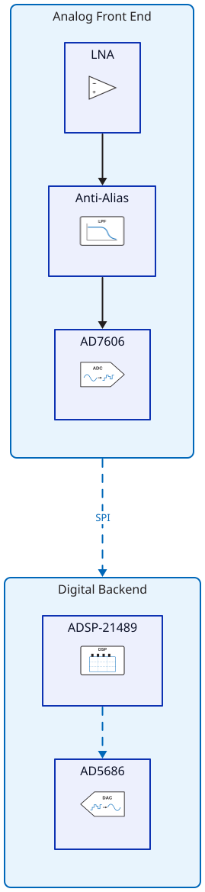
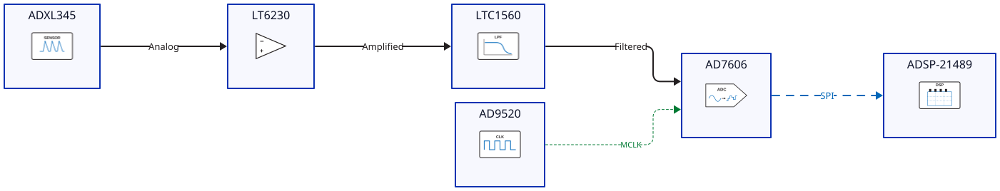
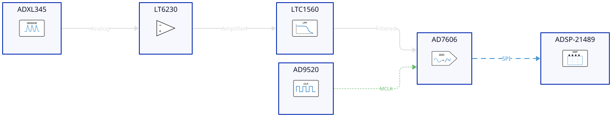

ADI Theme¶
The ADI theme provides Analog Devices brand colors and styling classes based on the analog.com brand guidelines.
Color Palette¶
Light Theme¶
The default light theme uses these brand colors:
ADI Blue — #0067B9 — Primary brand color |
|
Dark Blue — #004A87 — Headers, emphasis |
|
Light Blue — #4D9AD5 — Secondary accent |
|
Pale Blue — #A8D4F0 — Highlights |
|
Background Blue — #E8F4FD — Container fill |
|
Soft Black — #231F20 — Text, strokes |
|
Grey — #58595B — Secondary text |
|
Light Grey — #D1D3D4 — Borders, dividers |
|
Red — #C8102E — Power rails |
|
Green — #007A33 — Clock signals |
Dark Theme¶
The dark theme inverts colors for dark backgrounds:
ADI Blue — #4D9AD5 — Primary accent |
|
Dark Blue — #0067B9 — Deep accent |
|
Background — #0D1B2A — Container fill |
|
Text — #E0E0E0 — Primary text |
|
Red — #FF6B6B — Power rails |
|
Green — #66BB6A — Clock signals |
Signal Classes¶
Apply these classes on connections (edges) between components to indicate signal type. Each uses a distinct color and stroke style.
Class |
Color |
Stroke |
Use For |
|---|---|---|---|
|
ADI Blue |
Solid, 2px |
Default signal connections |
|
Soft Black |
Solid, 2px |
Analog signal paths |
|
ADI Blue |
Dashed, 2px |
Digital buses (SPI, I2S, JESD204B) |
|
Green |
Dashed, 1px |
Clock distribution |
|
Red |
Solid, 2px |
Power supply rails |
Example with all signal types:
amp: LT6230 { class: amplifier }
adc: AD7606 { class: adc }
clk: AD9520 { class: clock }
pwr: ADP7118 { class: voltage-regulator }
amp -> adc: Analog { class: adi-signal-analog }
adc -> dsp: SPI { class: adi-signal-digital }
clk -> adc: MCLK { class: adi-signal-clock }
pwr -> adc: 3.3V { class: adi-signal-power }
Layout Classes¶
adi-container¶
Groups related components into a labeled subsystem block with ADI blue border and light blue fill.
frontend: Analog Front End {
class: adi-container
amp: LNA { class: amplifier }
adc: AD7606 { class: adc }
amp -> adc { class: adi-signal-analog }
}
Property |
Light |
Dark |
Fill |
|
|
Stroke |
|
|
Border radius |
8px |
8px |
Drop shadow |
Yes |
Yes |
Font color |
|
|

adi-title¶
Diagram title styled with ADI brand colors. Renders as a text-only shape.
title: RF Receiver System { class: adi-title }
Property |
Light |
Dark |
Font size |
24 |
24 |
Font color |
|
|
Bold |
Yes |
Yes |
adi-note¶
Annotation block for design notes. Renders as a page shape with muted colors.
note: |md
ADC sampling rate: 200 kSPS
Resolution: 16-bit
| { class: adi-note }
Property |
Light |
Dark |
Fill |
|
|
Stroke |
|
|
Font color |
|
|
Style |
Italic |
Italic |
Theme Comparison¶


Using Themes¶
import d2
# Light theme (default)
svg_light = d2.compile(code, library="adi")
# Dark theme
svg_dark = d2.compile(code, library="adi", theme="dark")